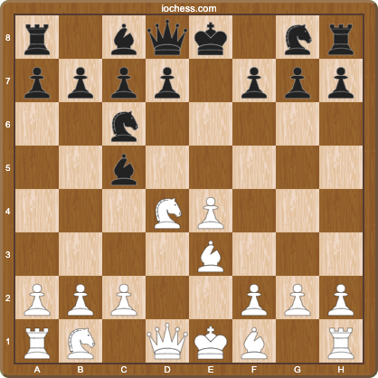
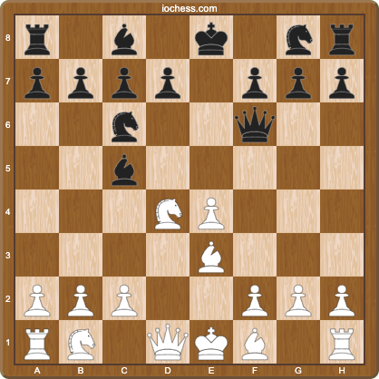
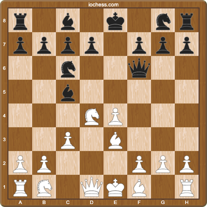

Scotch Game Repertoire (1.e4 e5 2.Nf3 Nc6 3.d4)
Opening Principles
The Scotch Game follows core opening principles:
- Center Control: Immediate challenge to Black's center with 3.d4
- Development with Tempo: Most pieces are developed with threats
- Pawn Structure: Our e4+d4 center dictates kingside attacking plans
- Attack Direction: With pawns on e4/d4, we focus on kingside attacks
Initial Position after 1.e4 e5 2.Nf3 Nc6 3.d4

After 3.d4, we reach the defining position of the Scotch Game. This move exemplifies two key principles:
- Center Priority: We challenge Black's center immediately rather than developing more pieces
- Tempo Gain: After the exchange on d4, our knight recaptures with tempo on c6
Development Order
Our ideal development sequence:
- Control center with e4, d4
- Develop knights to f3, d4 (fewest options first)
- Place bishop on e3 (attacking Black's bishop)
- Support center with c3 or develop to c3
- Complete development with Bd3 and 0-0
Main Line with 4...Bc5
After 1.e4 e5 2.Nf3 Nc6 3.d4 exd4 4.Nxd4 Bc5, we have three major options:
A) 5.Be3! (Main Line - 55.3% for White)
The sharpest and most principled continuation. This follows our development principles:
- Develops with tempo (attacking Bc5)
- Controls key central squares (e3 supports d4)
- Maintains flexibility for knight development
A1) 5...Qf6 (Most Common - 72.1%)
A1.1) 6.c3! (Main Line - 79.3%)
White scores 52.2%
Most popular and solid approach
Pawn Structure Analysis:
- c3 supports our d4 center
- Creates a potential d4-d5 break
- Gives our pieces safe squares on d3 and c2
- Attack direction: With strong center, focus kingside
Development Plan:
- Bd3 (develops toward kingside attack)
- 0-0 (king safety)
- Re1 or Qd2 (connecting rooks, eyeing kingside)